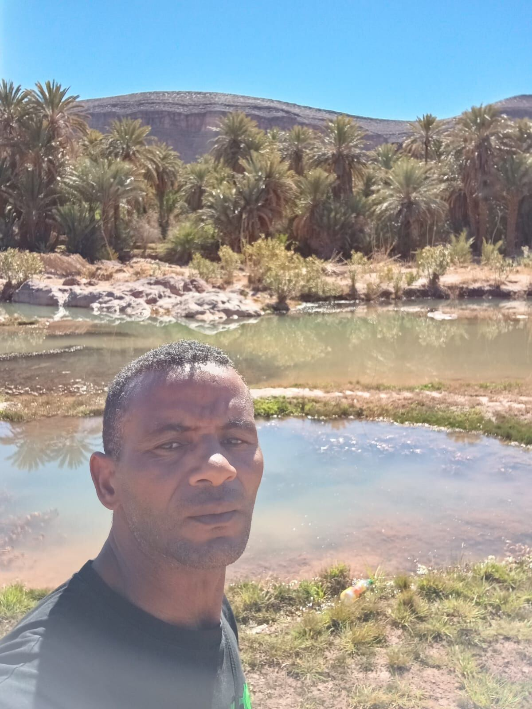
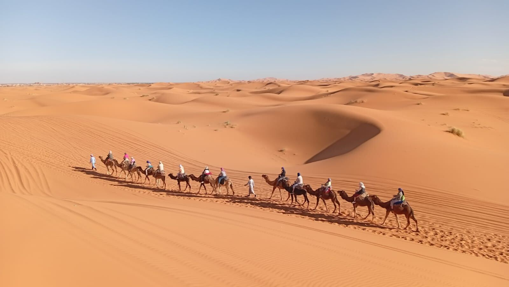
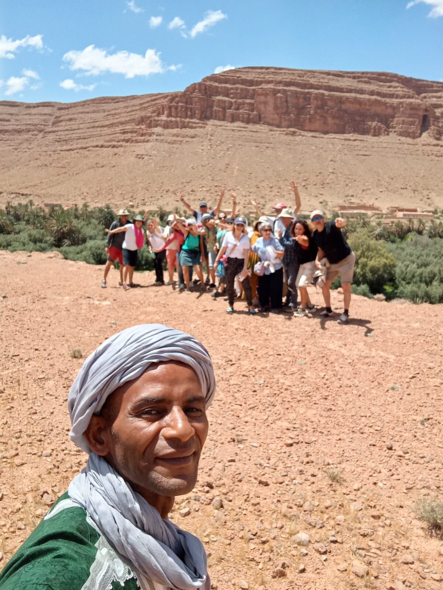
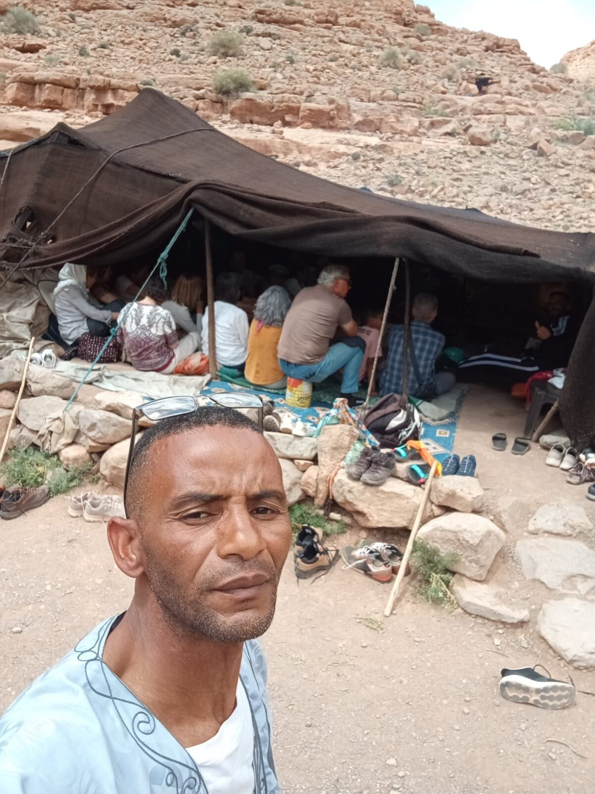
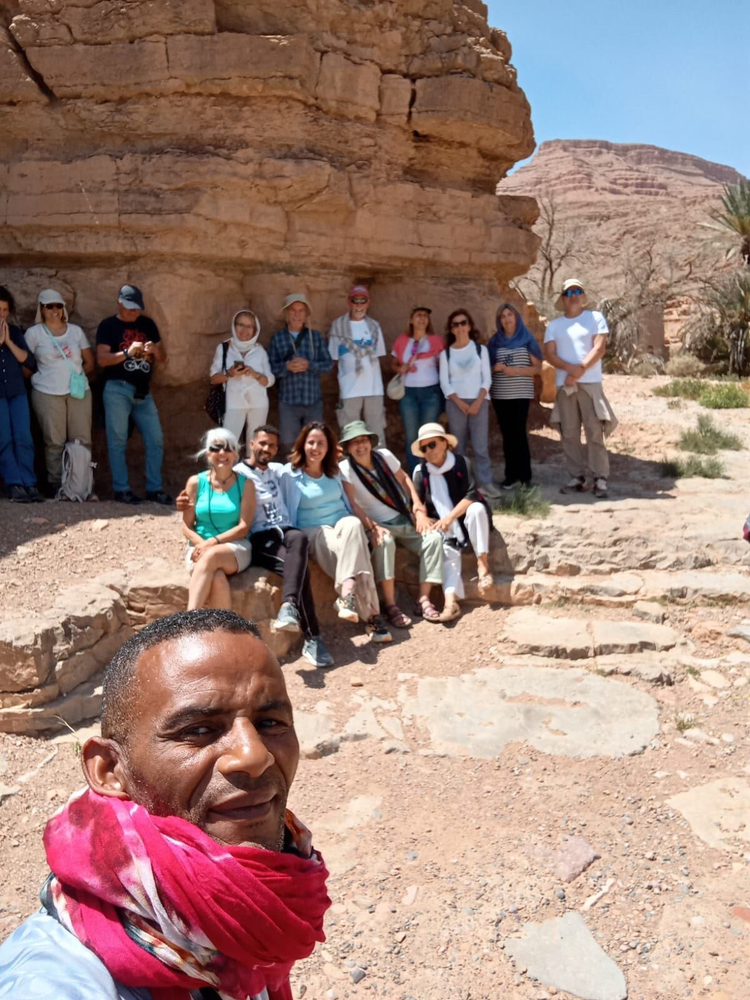
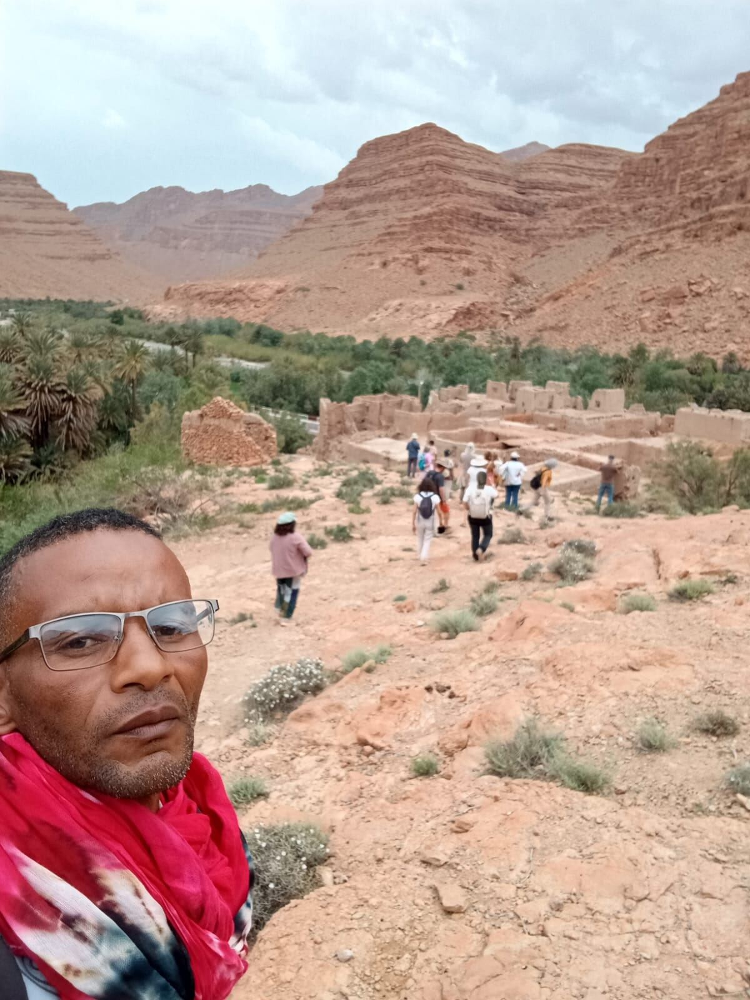
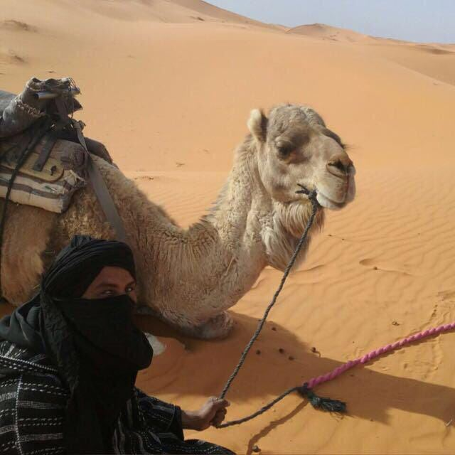

Moments from the road
Boudnib · The Reg — Sahara, Morocco
Authentic desert and nomad experiences in Morocco. Moustapha is an Amazigh guide who leads travellers through the Sahara and its mountains — camel treks, nomad encounters, and nights under the stars.

The guide
Moustapha is a local guide from the Sahara region of Morocco, leading small groups through the dunes, mountains and hidden villages he grew up around. His routes carry the knowledge of generations of nomadic life, from reading the desert to reading the sky.
He guides in Spanish, French and Arabic, and welcomes travellers with the warmth that defines nomadic hospitality — tea by the fire, a story about the land, and a pace that lets you actually feel the place.
Routes · Waypoints
Each route is a different way into the desert and the mountains around it. Durations and exact stops are set together with Moustapha before your trip.

Ride into the dunes by camel and spend the night in a Berber tent under a sky full of stars, with sunrise and sunset over the Sahara.
Pay what you feel
Trekking and walking routes through the mountains and river gorges near the Sahara — dramatic canyon views and quiet oasis villages along the way.
Pay what you feel
Visit nomadic families living in the desert and mountains — sit for tea, hear their way of life, and see a side of Morocco most tours never reach.
Pay what you feel
Explore caves carved into the rock and the remains of old desert mines, with the stories behind them told by someone who grew up nearby.
Pay what you feel
Cover more ground by 4x4 or quad bike, stopping at desert villages and old ksour along the way — a faster-paced way to see the region.
Pay what you feel
Combine camel trekking, mountain trails, nomad visits and desert camps into a longer journey — the fullest way to experience the Sahara with Moustapha.
Pay what you feelFarm Stay · Park4Night · Boudnib
Welcome to my farm, with date palms, fruit trees and olive trees. I offer campervan stays — both overnight and day visits — so you can explore the area, join in the farm's daily tasks, or discover the region: an authentic region, untouched by mass tourism. I also offer a range of excursions.
My farm is 5 km from the village of Boudnib, along a dirt track that's accessible to all types of vehicles. It sits in the heart of the Reg (mountain desert) — an ideal place to relax, meditate or practise yoga. Don't hesitate to come, you will be very welcome!
Find the exact spot on Park4Night [link to the Park4Night listing — to add], or simply reach out on WhatsApp to arrange your stay directly with Moustapha.
Nearby
Heritage
The old fortified ksar of Taous, near Boudnib — a glimpse into the traditional earthen architecture of the region.
Oasis
Visit the abandoned village of Sahli and enjoy a picnic in the oasis nearby — quiet, green, and far from the crowds.
Cave
A cave known locally as Kef Aziza, or Azegza in Berber — one of the area's hidden natural landmarks.
Moments from the road
How it works
Contact
Reach Moustapha directly — no booking platforms, no middlemen. Just a conversation to plan your route.
Payment
Payment is made in person, after the experience — you give what you feel it was worth. It's the Moroccan way of doing things.
Style
Routes are shaped around you, not a fixed script — the pace, the stops and the stories adjust to the people on the trip.
Last waypoint
Reach out to Moustapha directly to check dates, ask questions, or plan your trip through the Sahara.
Exact tour durations, difficulty levels and dates are confirmed directly with Moustapha when you reach out.

Traveller voices
Comments
Share your experience or ask a question — visible to everyone who visits this page.